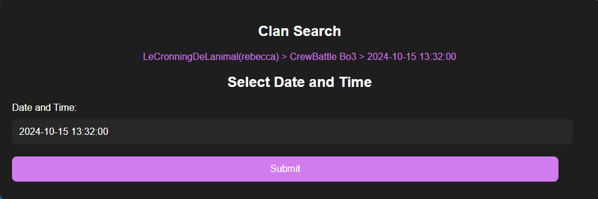
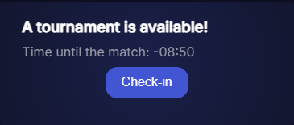
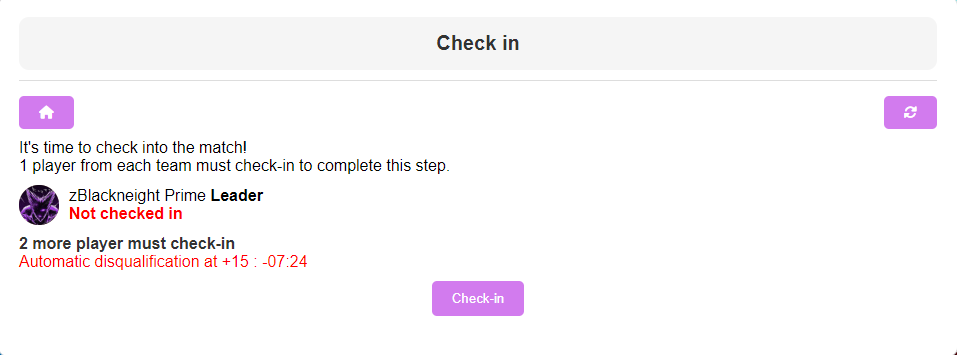
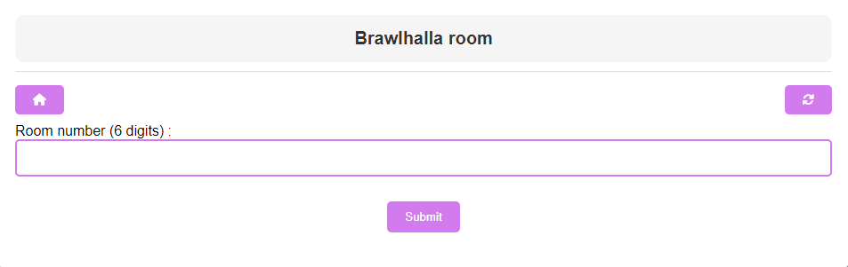
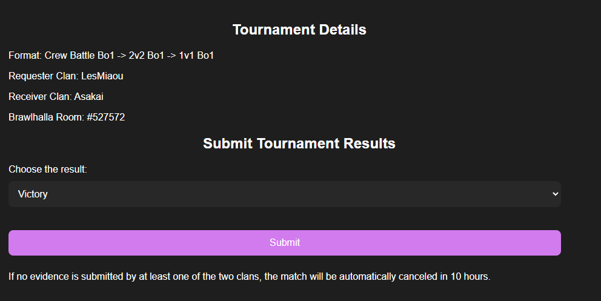
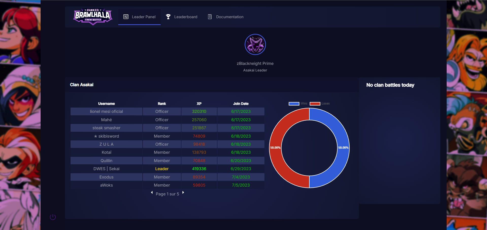

Ranked Crew Battle Documentation
Welcome to Ranked Crew Battle, the platform dedicated to organizing crew battles in the game Brawlhalla. This site allows you to manage your clans, view rankings, and participate in exciting battles.
Legal Notice
Visual assets courtesy of Blue Mammoth Games. Ranked Crew Battle is neither associated nor endorsed by Blue Mammoth Games and doesn't reflect the views or opinions of Blue Mammoth Games or anyone officially involved in developing Brawlhalla. Brawlhalla and Blue Mammoth Games are trademarks of Blue Mammoth Games.
Site Map
To access Ranked Crew Battle, it is mandatory to log in with your Steam account. You have probably already completed this step, as access to the site is conditioned by your login.
The Different Parts of the Site ↓
How to Make Requests
Clan Search
When you log in as an admin on your Panel page, you have access to the Crew Battle Request page. On this page, you can search for clans in the search bar. If a clan is available on the site, it means that a leader or officer of that clan has logged in. In this case, you will be able to send a request to that clan.
To help you choose which clans you can face without too much difficulty, suggestions are created based on your clan's ELO, which is by default set to 1200. A suggestion displays the names of 5 random clans in the clan list, along with their ELO.
If the 5 suggested clan names do not ring a bell, you can press F5 to refresh the page, which will give you 5 other clan names to consider!
Dates and Formats
Once you have chosen the clan, you will need to select the formats. These formats are predefined based on the formats commonly used in Brawlhalla crew battles. Once the format is chosen, select the date of your meeting. A history of your request will then appear at the top.
Special Rule - Request Times
You cannot choose the same date and time for two different tournament requests; you need an hour between the two request times. For example, if today is December 31st and I choose to face the clan named LeCronningDeLanimal at noon the same day, while I have already requested another clan for December 31st at noon, an error message will appear. However, I could very well request a crew battle with LeCronningDeLanimal on the same day but at 1 PM instead of 12 PM.
This avoids a situation where you have a crew battle at the same time with two clans, which is something the site does not foresee.
How to Validate a Request
Validating a crew battle request is very simple. Go to your clan's "Admin Panel" page, then to the "Received Crew Battles" section. Click the button to display the list of received requests. This list will indicate which clan proposed a crew battle, the date and time, and the chosen format. Just below, two very clear buttons will allow you to either accept or reject the battle.
If you were the one who requested a crew battle, it will appear in the Crew Battle Requested section.
How to Check-in My Crew Battle
On the day of the crew battle you organized, you will be able to access the check-in page 30 minutes before the official match time. If both clans have checked in before the scheduled time, the battle can be started immediately. However, the check-in page becomes inaccessible if one of the clans is more than 15 minutes late. After this time, if neither clan has checked in, the crew battle is automatically canceled.
Check-in Page
Once on the check-in page (see the image below), you can see which clans have confirmed their presence and which have not yet done so. Simply click the button to register.
Brawlhalla Room
As soon as both clans have checked in, you will need to enter the Brawlhalla room ID so that both teams can join.
Report the Results
Once this is done, a button will appear to report the result of the match.
⚠️ Be careful not to report too quickly! If your opponent has already submitted their result before you, a message will notify you how long ago it was submitted. If only one clan submits their result and the other does not within 20 minutes, the result will be automatically validated and updated in the rankings.
In the event of a dispute, if both clans report a victory, it means that one of them is lying. You will then be asked to provide image evidence on the dedicated page to resolve the conflict.
How to Report My Crew Battle
A clean page will appear to summarize all the elements of the crew battle. This is where you can record the match results.
As mentioned previously, in the event of a dispute, you will be asked to submit visual evidence via the dedicated page to resolve the conflict.
How to Submit Evidence
To submit evidence, simply go to the dedicated page (see images below). You will be able to upload up to 21 images to support your victory or defeat.
Only certain types of images will be accepted. The expected formats are either the podium results right after the match or those provided via the replay. If you provide evidence via the replay, make sure the players' usernames are clearly visible. An example is shown below.
Why this type of image in particular? Because they are difficult to manipulate via Photoshop. If you attempt to cheat in this way, it will be quickly detected. Please note that any attempt to falsify recognized images will result in the clan being banned from the site.
Each image must be under 5MB, not contain any unauthorized characters (such as /, ', etc.), and be in PNG or JPEG format. If the images sent do not comply with the rules mentioned above, a moderator may cancel the match. In this case, no clan will lose or gain points.
The Different Panels
There are two types of panels, as previously mentioned: the Admin Panel and the Member Panel.
Admin Panel
Below is an illustration of the Admin Panel.
Several elements differ from the Member Panel. First, the header offers additional links, allowing you to navigate to more pages. Additionally, a bell icon allows you to receive important notifications.
Then, three additional boxes appear, dedicated to receiving crew battle requests and check-ins. These are the main differences compared to the Member Panel.
Member Panel
The Member Panel, on the other hand, offers a much simpler interface. It is mainly designed to inform players about their clan's statistics. The available features are limited but essential. Members can view clan rankings and track their performance, as well as access a section dedicated to documentation, where they can get all the necessary information on how to use the site.
This panel focuses on the essentials, providing members with the information they need without the complexity of the additional features found in the Admin Panel.
The Leaderboard
The leaderboard page displays the clan rankings in real-time, allowing you to track the performance of various groups. Each page can display up to 25 players, providing a clear view of the top clans and their progression in the rankings.